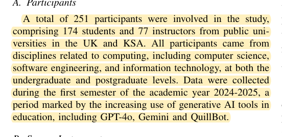
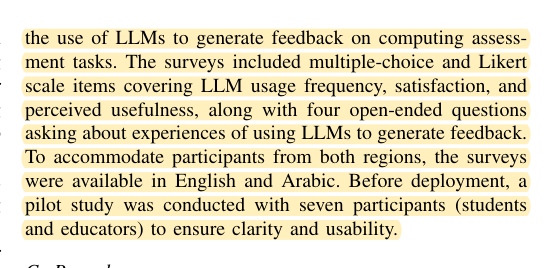
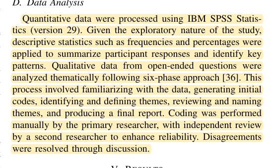

R33 · IEEE education study methods
Feedback surveys should distinguish learners from faculty
Adoption, Usage, and Perceptions of LLM-Generated Feedback in Computer Science Education: A Cross-Cultural Study of Students and Academics
Eyman Alyahyan, Mireilla Bikanga Ada, Jake Lever · 2025
IEEE FIE 2025; public accepted author manuscript from the University of Glasgow, including repository cover sheets: 11 pages
What the study investigates
The authors examine how students and academics in the United Kingdom and Saudi Arabia use and perceive LLM feedback. It is a usage study, not an automated-scoring accuracy experiment.
How it was studied
Section IV includes 174 students and 77 academics, totaling 251 respondents, with separate questionnaires. Seven people pretested clarity. The final instruments contain selected-response/Likert items and four open-ended questions. Frequencies and percentages are reported; one researcher codes open responses, another independently reviews them, and differences are discussed.
Findings
Participants value speed and detail while raising reliability and professional-review concerns. The survey identifies needs; it does not validate a model as superior to instructors.
Limits of the evidence
The 251 respondents span different groups and do not form a controlled experiment on one system. Adaptation and pretesting are not complete psychometric validation. There is no component ablation or objective comparison of learning gains.
How it informs DualGraph-OSCE
Before formal use, a small non-study group can check that the questionnaire is understandable, after which wording is frozen. Their responses do not increase the formal sample. Learner experience and faculty verification use different forms. Open comments should retain anonymized wording and be independently reviewed by another research member; faculty need not code every qualitative response.
Where to cite it
Evaluation: questionnaire pretesting and the treatment of open responses.
Possible manuscript wording
Following a mixed-questionnaire FIE study, we check item clarity and separately report quantitative experience distributions and specific usage concerns. These findings explain implementation issues rather than replace faculty verification of assessment accuracy.
[R33·1]This is a manuscript-specific paraphrase, not a quotation from the source. The excerpts below define what the citation supports. The proposed method and its expected benefits are not findings of the cited paper.
Source passages and precise locations
Page numbers refer to physical pages in the saved original PDF, including any repository cover sheets. Compilation page numbers are listed separately. Yellow highlighting marks the passage used for the argument.
R33-E1Participant groups
Original PDF page 3. Highlight compilation page 458. The highlight identifies the passage used here; consult the full original page for its context.

R33-E2Questionnaire pretesting and item types
Original PDF page 3. Highlight compilation page 458. The highlight identifies the passage used here; consult the full original page for its context.

R33-E3Descriptive statistics and open-response analysis
Original PDF page 3. Highlight compilation page 458. The highlight identifies the passage used here; consult the full original page for its context.
